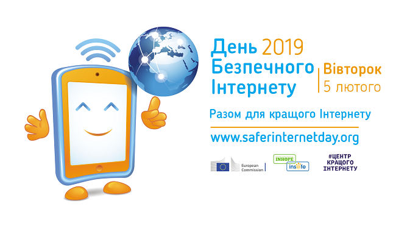

День безпечного Інтернету (Safer Internet Day) відзначається другого дня (у вівторок), другого тижня, другого місяця (лютого) з 2004 року з метою популяризації більш безпечнішого і більш відповідального використання онлайн-технологій і мобільних телефонів, особливо серед дітей і молодих людей в усьому світі. Запроваджений цей день у 2004 за ініціативи європейських некомерційних організацій: Європейської комісії, European SchoolNet, Insafe (European Safer Internet Network — Європейська мережа безпечного Інтернету). Компанія Insafe об’єднує 30 безпечних Інтернет-центрів онлайн у кожній з 27 країн Євросоюзу, а також в Ісландії, Норвегії. На жаль, ще не відкрито Інтернет-центр в Україні. Кожен Інтернет-центр складається з центру довіри, гарячої лінії та молодіжної групи. Гарячі лінії надають інформацію та поради дітям, підліткам, батькам і викладачам з тематики комп’ютерної безпеки. За телефоном гарячої лінії завжди можна повідомити про заборонений і нелегальний контент, зберігши при цьому конфіденційність. День безпечного Інтернету має на меті об’єднання зусиль зацікавлених державних, громадських та приватних сторін для підвищення рівня знань про безпечне та відповідальне використання Інтернет-технологій, перш за все, серед дітей та молоді. У День безпечного Інтернету в багатьох країнах світу обговорюються шляхи безпечного використання молоддю Інтернету, питання Інтернет-етики, загрози протизаконного контенту.
В 2009 Коаліція за безпеку дітей в Інтернеті за ініціативи «Майкрософт Україна» оголосила про запуск соціальної кампанії «Місяць безпечного Інтернету». В 2009 році створена постійно діюча «гаряча лінія» з веб-інтерфейсом Skarga, де кожен користувач може залишити свою скаргу щодо інформаційних порушень в Інтернеті, де кожен користувач може залишити свою скаргу щодо інформаційних порушень в Інтернеті. В 2013 в День безпечного Інтернету проведена прес-конференція Інтернет асоціації України, під час якої було визначено стратегію боротьби за безпеку в Інтернеті, яку умовно можна розділити на три складові: інформування користувачів і профілактичні заходи, створення механізму захисту в процессі надання Інтернет-послуг, впровадження законодавчих актів по усуненню протизаконного контенту. 8 лютого 2017 року ДНУ «Інститут модернізації змісту освіти» за підтримки компанії ТОВ Майкрософт Україна провів Всеукраїнські вебінари для учнів старших класів «Як зробити Інтернет безпечним» та для учителів та батьків «Безпечний Інтернет». Семінари мали на меті зменшення негативного впливу небажаної інформаційної продукції на дітей та молодь шляхом покращення їхньої обізнаності щодо безпечного Інтернету, забезпечення відповідального використання онлайн-технологій та мобільних приладів. У 2017 році в Україні створено Центр кращого Інтернету з метою просування безпечного використання цифрових технологій, розвитку та підтримки інформаційно-цифрового суспільства, просування культури та безпеки користування мережею Інтернет.
Також створений сайт Он-ляндія: безпечна веб-країна з матеріалами для дітей, батьків i вчителів (інтерактивні сценарії, короткі тести, готові плани уроків), завдяки яким діти зможуть засвоїти основи безпечної роботи в Інтернеті.
Перевір рівень своєї кібербезпеки – пройди тест.